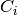
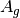
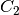
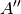
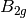
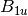
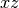
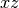

Psithon: Structuring an Input File¶
To allow arbitrarily complex computations to be performed, PSI4 was built upon the Python interpreter. However, to make the input syntax simpler, some pre-processing of the input file is performed before it is interpreted, resulting in Python syntax that is customized for PSI, termed Psithon. In this section we will describe the essential features of the Psithon language. PSI4 is distributed with an extensive test suite, described in section Test Suite and Sample Inputs; the input files for these test cases can be found in the samples subdirectory of the top-level PSI4 source directory, and should serve as useful examples.
Physical Constants¶
For convenience, the Python interpreter will execute the contents of the ~/.psi4rc file in the current user’s home area (if present) before performing any tasks in the input file. This allows frequently used python variables to be automatically defined in all input files. For example, if we repeatedly make use of the universal gravitational constant, the following line could be placed in the ~/.psi4rc file
UGC = 6.67384E-11 # m^3 / kg^-1 s^-2
which would make the variable UGC available in all PSI4 input files. For convenience, the physical constants used within the PSI4 code (which are obtained from the 3rd edition of the IUPAC Green book [Cohen:GreenBook:2008]) are also automatically loaded as Psithon variables (before ~/.psi4rc is loaded, so that ~/.psi4rc values can be overridden by the user).
The physical constants used within PSI4, which are automatically made available within all PSI4 input files.
psi_h = 6.62606896E-34 # The Planck constant (Js)
psi_c = 2.99792458E8 # Speed of light (ms$^{-1}$)
psi_kb = 1.3806504E-23 # The Boltzmann constant (JK$^{-1}$)
psi_R = 8.314472 # Universal gas constant (JK$^{-1}$mol$^{-1}$)
psi_bohr2angstroms = 0.52917720859 # Bohr to Angstroms conversion factor
psi_bohr2m = 0.52917720859E-10 # Bohr to meters conversion factor
psi_bohr2cm = 0.52917720859E-8 # Bohr to centimeters conversion factor
psi_amu2g = 1.660538782E-24 # Atomic mass units to grams conversion factor
psi_amu2kg = 1.660538782E-27 # Atomic mass units to kg conversion factor
psi_au2amu = 5.485799097E-4 # Atomic units (m$@@e$) to atomic mass units conversion factor
psi_hartree2J = 4.359744E-18 # Hartree to joule conversion factor
psi_hartree2aJ = 4.359744 # Hartree to attojoule (10$^{-18}$J) conversion factor
psi_cal2J = 4.184 # Calorie to joule conversion factor
psi_dipmom_au2si = 8.47835281E-30 # Atomic units to SI units (Cm) conversion factor for dipoles
psi_dipmom_au2debye = 2.54174623 # Atomic units to Debye conversion factor for dipoles
psi_dipmom_debye2si = 3.335640952E-30 # Debye to SI units (Cm) conversion factor for dipoles
psi_c_au = 137.035999679 # Speed of light in atomic units
psi_hartree2ev = 27.21138 # Hartree to eV conversion factor
psi_hartree2wavenumbers = 219474.6 # Hartree to cm$^{-1}$ conversion factor
psi_hartree2kcalmol = 627.5095 # Hartree to kcal mol$^{-1}$ conversion factor
psi_hartree2MHz = 6.579684E9 # Hartree to MHz conversion factor
psi_kcalmol2wavenumbers = 349.7551 # kcal mol$^{-1}$ to cm$^{-1}$ conversion factor
psi_e0 = 8.854187817E-12 # Vacuum permittivity (Fm$^{-1}$)
psi_na = 6.02214179E23 # Avagadro's number
psi_me = 9.10938215E-31 # Electron rest mass (in kg)
The psi_ prefix is to prevent clashes with user-defined variables in PSI4 input files.
Molecule and Geometry Specification¶
PSI4 has a very flexible input parser that allows the user to provide geometries as Cartesian coordinates, Z-matrix variables, or a combination of both. The use of fixed values and variables are supported for both. For example, the geometry for H2 can be specified a number of ways, using the molecule keyword:
molecule{
H
H 1 0.9
}
or
molecule{
H
H 1 r
r = 0.9
}
or
molecule{
H1
H2 H1 0.9
}
or
molecule{
H 0.0 0.0 0.0
H 0.0 0.0 0.9
}
or
molecule{
H 0.0 0.0 0.0
H 0.0 0.0 r
r = 0.9
}
or
molecule{
H 0.0 0.0 -r
H 0.0 0.0 r
r = 0.45
}
Blank lines are ignored and, unlike regular Python syntax, indentation within the molecule block does not matter, although the molecule keyword itself must be aligned within the input according to standard Python syntax. For more examples of geometry specification, see the mints1 input file in the samples folder. It is also possible to mix Cartesian and Z-matrix geometry specifications, as demonstrated in the mints4 and mints6 sample input files. For example, consider the following geometry specification, taken from the mints6 input:
molecule alanine {
N -1.527107413251 0.745960643462 0.766603000356
C -0.075844098953 0.811790225041 0.711418672248
C 0.503195220163 -0.247849447550 -0.215671574613
O -0.351261319421 -0.748978309671 -1.089590304723
O 1.639498336738 -0.571249748886 -0.174705953194
H -1.207655674855 -0.365913941094 -0.918035522052
# First, remove the H from the alpha carbon. This line could be deleted
# and is only included for completeness
#H 0.429560656538 0.717651915252 1.673774709694
# Now patch it, using a Z Matrix specification. This patch can be applied
# anywhere in the coord specification, as long as it appears lower than
# the atoms referenced, as is usual for Z-Matrices
C 2 rCC 3 aCCC 1 dCCCN
H 7 rCH1 2 aHCC1 3 dHCCC1
H 7 rCH2 2 aHCC2 3 dHCCC2
H 7 rCH3 2 aHCC3 3 dHCCC3
H 0.221781602033 1.772570540211 0.286988509018
H -1.833601608592 0.108401996052 1.481873213172
H -1.925572581453 1.640882152784 0.986471814808
aCCC = 108.0
rCC = 1.4
dCCCN = 120
rCH1 = 1.08
rCH2 = 1.08
rCH3 = 1.08
aHCC1 = 109.0
aHCC2 = 109.0
aHCC3 = 109.0
dHCCC1 = 0.0
dHCCC2 = 120.0
dHCCC3 = 240.0
}
Here, we remove the hydrogen from the alpha carbon of glycine and replace it with a methyl group. Applying this patch using Cartesian coordinates is difficult, because it depends on the orientation of the existing glycine unit. In this example, we use Z-Matrix coordinates to define the methyl group, and define the orientation in terms of the existing glycine Cartesian coordinates which is much easier to visualize than the corresponding Cartesian-only approach.
Multiple Molecules¶
To facilitate more elaborate computations, it is possible to provide a name for each molecule, and tell PSI4 which one should be used in a given calculation. For example, consider the following input file:
molecule h2{
H
H 1 0.9
}
set basis cc-pvdz
set reference rhf
energy('scf')
molecule h{
H
}
set basis cc-pvdz
set reference uhf
energy('scf')
Here, two separate jobs are performed on two different molecules; the first is performed on H2, while the second is for H atom. The last molecule to be specified is the “active” molecule by default. To explicitly activate a named molecule, the activate keyword is provided. Using this keyword, the above input file can be equivalently written as follows:
molecule h2{
H
H 1 0.9
}
molecule h{
H
}
activate(h2)
set basis cc-pvdz
set reference rhf
energy('scf')
activate(h)
set basis cc-pvdz
set reference uhf
energy('scf')
Note that whenever the molecule is changed, the basis set must be specified again. The following section provides more details about the job control keywords used in the above examples.
Molecule Keywords¶
In addition to specifying the geometry, additional information can be
provided in the molecule optional_molecule_name {...} block.
If two integers charge multiplicity are encountered on any
line of the molecule block, they are interpreted as the molecular charge
and multiplicity ( ), respectively. The symmetry
can be specified by a line reading symmetry symbol, where
symbol is the Schönflies symbol of the
(Abelian) point group to use for the computation. This need not be
specified, as the molecular symmetry is automatically detected by
PSI4. Certain computations require that the molecule is not
reoriented; this can be achieved by adding either no_reorient or
noreorient. By default, Ångström units are used; this is changed by
adding a line that reads units spec, where spec is one
of ang, angstrom, a.u., au, or bohr.
), respectively. The symmetry
can be specified by a line reading symmetry symbol, where
symbol is the Schönflies symbol of the
(Abelian) point group to use for the computation. This need not be
specified, as the molecular symmetry is automatically detected by
PSI4. Certain computations require that the molecule is not
reoriented; this can be achieved by adding either no_reorient or
noreorient. By default, Ångström units are used; this is changed by
adding a line that reads units spec, where spec is one
of ang, angstrom, a.u., au, or bohr.
Ghost Atoms¶
While many common computations, such as SAPT and counterpoise corrections, can be greatly simplified using the notation described in Non-Covalently Bonded Molecule Fragments, manual specification of ghost atoms is sometimes required. Either
molecule he2 {
He
Gh(He) 1 2.0
}
or
molecule he2 {
He
@He 1 2.0
}
will generate a helium dimer, with the second atom ghosted, i.e., possessing basis functions but no electrons or nuclear charge. See dfmp2_1 and ghosts for a demonstration of both mechanisms for specifying ghost atoms.
Geometries from the PubChem Database¶
Obtaining rough starting guess geometries can be burdensome. The Z-matrix coordinate system was designed to provide chemists with an intuitive method for guessing structures in terms of bond lengths and angles. While Z-matrix input is intuitive for small molecules with few degrees of freedom, it quickly becomes laborious as the system size grows. To obtain a reasonable starting guess geometry, PSI4 can take a chemical name as input; this is then used to attempt to retrieve Cartesian coordinates from the [PubChem] database.
For example, to run a computation on benzene, we can use the following molecule specification:
molecule benzene {
pubchem:benzene
}
If the computer is connected to the internet, the above code will instruct PSI4 to search PubChem for a starting structure. The search is actually performed for compounds whose name contains “benzene”, so multiple entries will be returned. If the name provided (“benzene” in the above example) exactly matches one of the results, that entry will be used. If no exact match is found the results, along with a unique chemical identifier (CID), are printed to the output file, prompting the user to provide a more specific name. For example, if we know that we want to run a computation on a compound whose name(s) contain “benzene”, but we’re not sure of the exact IUPAC name, the following input can be used:
molecule benzene {
pubchem:benzene*
}
Appending the “*” prevents an exact match from being found and, at the time of writing, the following results are displayed in the output file:
Chemical ID IUPAC Name
241 benzene
7371 benzenesulfonic acid
91526 benzenesulfonate
244 phenylmethanol
727 1,2,3,4,5,6-hexachlorocyclohexane
240 benzaldehyde
65723 benzenesulfonohydrazide
74296 N-phenylbenzenesulfonamide
289 benzene-1,2-diol
243 benzoic acid
7370 benzenesulfonamide
636822 1,2,4-trimethoxy-5-[(E)-prop-1-enyl]benzene
7369 benzenesulfonyl chloride
12932 N-[2-di(propan-2-yloxy)phosphinothioylsulfanylethyl]benzenesulfonamide
7505 benzonitrile
78438 N-[anilino(phenyl)phosphoryl]aniline
12581 3-phenylpropanenitrile
517327 sodium benzenesulfonate
637563 1-methoxy-4-[(E)-prop-1-enyl]benzene
252325 [(E)-prop-1-enyl]benzene
Note that some of these results do not contain the string “benzene”; these compounds have synonyms containing that text. We can now replace the “benzene*” in the input file with one of the above compounds using either the IUPAC name or the CID provided in the list, viz:
molecule benzene {
pubchem:637563
}
or
molecule benzene {
pubchem:1-methoxy-4-[(E)-prop-1-enyl]benzene
}
Some of the structures in the database are quite loosely optimized and do not have the correct symmetry. Before starting the computation, PSI4 will check to see if the molecule is close to having each of the possible symmetries, and will adjust the structure accordingly so that the maximum symmetry is utilized.
The standard keywords, described in Sec. Molecule Keywords, can be used in conjuction to specify charge, multiplicity, symmetry to use, etc. .
Symmetry¶
For efficiency, PSI4 can utilize the largest Abelian subgroup of the full point group of the molecule. Concomitantly a number of quantities, such as SOCC and DOCC, are arrays whose entries pertain to irreducible representations (irreps) of the molecular point group. Ordering of irreps follows the convention used in Cotton’s Chemical Applications of Group Theory, as detailed in Table Irreps. We refer to this convention as “Cotton Ordering” hereafter.
| Point Group | 1 | 2 | 3 | 4 | 5 | 6 | 7 | 8 |
|---|---|---|---|---|---|---|---|---|
 |
 |
|||||||
|  |  |  |
||||||
|  | |
 |
||||||
 |
 |
 | ||||||
 |
|
 |
 |
 |
||||
 |
 |
 |
|
|
||||
 |
 |
|
 |
|||||
 |
 |
 |  |
|
 |  |
 |
For example, water ( symmetry) has 3 doubly occupied
orbitals, as well as 1 each of and symmetry; the
corresponding DOCC array is therefore:
DOCC = [3, 0, 1, 1]
Although PSI4 will detect the symmetry automatically, and use the largest
possible Abelian subgroup, the user might want to run in a lower point group.
To do this the symmetry keyword can be used when inputting the molecule
(see Sec. Molecule and Geometry Specification). In most cases the standard
Schönflies symbol (one of c1, c2, ci, cs, d2,
c2h, c2v, d2h will suffice.
For certain computations, the user might want to specify which particular
subgroup is to be used by appending a unique axis specifier. For example when
running a computation on a molecule with symmetry in , the
axis can be chosen as either the  , the
, the  , or the
, or the  ; these can
be specified by requesing the symmetry as c2vx, c2vy, or c2vz, respectively.
Likewise the c2x, c2y, c2z, c2hx, c2hy, and c2hz
labels are valid. For symmetry the labels csx, csy, and
csz request the
; these can
be specified by requesing the symmetry as c2vx, c2vy, or c2vz, respectively.
Likewise the c2x, c2y, c2z, c2hx, c2hy, and c2hz
labels are valid. For symmetry the labels csx, csy, and
csz request the  , , and
, , and  planes be used as the mirror plane,
respectively. If no unique axis is specified, PSI4 will choose an appropriate
subgroup.
planes be used as the mirror plane,
respectively. If no unique axis is specified, PSI4 will choose an appropriate
subgroup.
Certain types of finite difference computations, such as numerical vibrational
frequencies, might lower the symmetry of the molecule. When this happens
symmetry-dependent arrays, such as SOCC, are automatically remapped
to the lower symmetry. For example, if we were to investigate the  state of water cation, we can specify
state of water cation, we can specify
SOCC = [0, 0, 1, 0]
in the input file. If any ensuing computations lower the symmetry, the above
array will be appropriately remapped. For example, reducing the symmetry to
(with the molecular plane defining the mirror plane), the above
array will be automatically interpreted as:
SOCC = [0, 1]
Some caution is required, however. The  state can be obtained with
the
state can be obtained with
the
SOCC = [1, 0, 0, 0]
specification, which would become
SOCC = [1, 0]
under the above-mentioned reduction in symmetry. The  state,
whose singly-occupied orbitals are
state,
whose singly-occupied orbitals are
SOCC = [0, 0, 0, 1]
would be mapped to
SOCC = [1, 0]
which is the same occupation as the state. In this case, the
state is lower in energy, and is not problematic. The distorted
geometries for the state are excited states that are subject to
variational collapse. One way to obtain reliable energies for these states is
to use a multi-state method; in this case it’s easier to run the entire
computation in the lowest symmetry needed during the finite difference
procedure.
Non-Covalently Bonded Molecule Fragments¶
PSI4 has an extensive range of tools for treating non-covalent intermolecular forces, including counterpoise corrections and symmetry adapted perturbation theory methods. These require the definition of which fragments are interacting within the complex. PSI4 provides a very simple mechanism for doing so; simply define the complex’s geometry using the standard Cartesian, Z-matrix, or mixture thereof, specifications and then place two dashes between nonbonded fragements. For example, to study the interaction energy of ethane and ethyne molecules, we can use the following molecule block:
molecule eneyne {
0 1
C 0.000000 -0.667578 -2.124659
C 0.000000 0.667578 -2.124659
H 0.923621 -1.232253 -2.126185
H -0.923621 -1.232253 -2.126185
H -0.923621 1.232253 -2.126185
H 0.923621 1.232253 -2.126185
--
0 1
C 0.000000 0.000000 2.900503
C 0.000000 0.000000 1.693240
H 0.000000 0.000000 0.627352
H 0.000000 0.000000 3.963929
}
In this case, the charge and multiplicity of each interacting fragment is
explicitly specified. If the charge and multiplicity are specified for the
first fragment, it is assumed to be the same for all fragments. When
considering interacting fragments, the overall charge is simply the sum of all
fragment charges, and any unpaired electrons are assumed to be coupled to
yield the highest possible  value.
value.
Having defined a molecule containing fragments like eneyne above, it is a simple matter to perform calculations on only a subset of the fragments. For instance, the commands below run a scf first on the ethene fragment alone (extract_subsets(1) pulls out fragment 1 as Real atoms and discards remaining fragments) and next on the ethene fragment with the ethyne fragment ghosted (extract_subsets(1,2) pulls out fragment 1 as Real atoms and sets fragment 2 as Ghost atoms). For beyond bimolecular complexes, arrays can be used, e.g. extract_subsets(2,[1,3]):
mA = eneyne.extract_subsets(1)
energy('scf')
clean()
mAcp = eneyne.extract_subsets(1,2)
energy('scf')
Job Control¶
PSI4 comprises a number of modules, written in C++, that each perform specific tasks and are callable directly from the Python front end. Each module recognizes specific keywords in the input file, detailed in Appendix Keywords by Module, which control its function. The keywords can be made global, or scoped to apply to certain specific modules. The following examples demonstrate some of the ways that global keywords can be specified:
# all equivalent
set globals basis cc-pVDZ
set basis cc-pVDZ
set globals basis = cc-pVDZ
set basis = cc-pVDZ
set globals{
basis cc-pVDZ
}
set {
basis cc-pVDZ
}
set {
basis = cc-pVDZ
}
Note the lack of quotes around cc-pVDZ, even though it is a string. The Psithon preprocessor automatically wraps any string values in set commands in strings. The last three examples provide a more convenient way for specifying multiple keywords:
set {
basis = cc-pVDZ
print = 1
reference = rhf
}
For arguments that require an array input, standard Python list syntax should be used, viz.:
set {
docc = [3, 0, 1, 1]
}
List/matrix inputs may span multiple lines, as long as the opening [ is on the same line as the name of the keyword.
Any of the above keyword specifications can be scoped to individual modules, by adding the name of the module after the set keyword. Omitting the module name, or using the name global or globals will result in the keyword being applied to all modules. For example, in the following input
molecule{
o
h 1 roh
h 1 roh 2 ahoh
roh = 0.957
ahoh = 104.5
}
set basis cc-pVDZ
set ccenergy print 3
set scf print 1
energy('ccsd')
the basis set is set to cc-pVDZ throughout, the SCF code will have a print level of 1 and the ccenergy code, which performs coupled cluster computations, will use a print level of 3. In this example a full CCSD computation is performed by running the SCF code first, then the coupled cluster modules; the energy() Python helper function ensures that this is performed correctly. Note that the Python interpreter executes commands in the order they appear in the input file, so if the last four commands in the above example were to read
set basis cc-pVDZ
energy('ccsd')
set ccenergy print 3
set scf print 1
the commands that set the print level would be ineffective, as they would be processed after the CCSD computation completes.
Assigning Basis Sets¶
While the above syntax will suffice for specifying basis sets in most cases, the user may need to assign basis sets to specific atoms. To achieve this, a basis block can be used. We use a snippet from the mints2 sample input file, which performs a benzene SCF computation, to demonstrate this feature.
basis {
assign DZ
assign C 3-21G
assign H1 sto-3g
assign C1 sto-3g
}
The first line in this block assigns the DZ basis set to all atoms. The next line then assigns 3-21G to all carbon atoms, leaving the hydrogens with the DZ basis set. On the third line, the hydrogen atoms which have been specifically labelled as H1 are given the STO-3G basis set, leaving the unlabelled hydrogen atoms with the DZ basis set. Likewise, the fourth line assigns the STO-3G basis set to just the carbon atoms labelled C1. This bizzare example was constructed to demonstrate the syntax, but the flexibility of the basis set specification is advantageous, for example, when selectivily omitting diffuse functions to make computations more tractable.
In the above example the basis sets have been assigned asymmetrically, reducing
the effective symmetry from  to ; PSI4 will detect this
automatically and run in the appropriate point group. The same syntax can be
used to specify basis sets other than that used to define orbitals. For
example,
to ; PSI4 will detect this
automatically and run in the appropriate point group. The same syntax can be
used to specify basis sets other than that used to define orbitals. For
example,
set df_basis_mp2 cc-pvdz-ri
or
basis {
assign cc-pVDZ-RI df_basis_mp2
}
are both equivalent ways to set the auxiliary basis set for density fitted MP2 computations. To assign the aug-cc-pVDZ-RI to carbon atoms, the following command is used:
basis {
assign C aug-cc-pVDZ-RI df_basis_mp2
}
When most popular basis sets are being used, including Dunning and Pople-style, the SCF, DF-MP2, and SAPT codes will chose the appropriate auxiliary basis set automatically according to Auxiliary Basis Sets, unless instructed otherwise by setting the auxiliary basis set in the input. Finally, we note that the basis {...} block may also be used for defining basis sets, as detailed in Sec. User-Defined Basis Sets.
Memory Specification¶
By default, PSI4 assumes that 256 Mb of memory are available. While this is enough for many computations, many of the algorithms will perform better if more is available. To specify memory, the memory keyword should be used. The following lines are all equivalent methods for specifying that 2 Gb of RAM is available to PSI4:
# all equivalent
memory 2 Gb
memory 2000 Mb
memory 2000000 Kb
One convenient way to override the PSI4 default memory is to place a memory command in the ~/.psi4rc file (Sec. Scratch Files and the ~/.psi4rc File). For example, the following makes the default memory 2 Gb.
set_memory(2000000000)
However, unless you’re assured of having only one job running on a node at a time (and all nodes on the filesystem with ~/.psi4rc have similar memory capacities), it is advised to set memory in the input file on a per-calculation basis.
Note
For parallel jobs, the memory keyword represents the total memory available to the job, not the memory per thread.
Return Values and PSI Variables¶
To harness the power of Python, PSI4 makes the most pertinent results of each computation are made available to the Python interpreter for post-processing. To demonstrate, we can embellish the previous example of H2 and H atom:
molecule h2{
H
H 1 0.9
}
set basis cc-pvdz
set reference rhf
h2_energy = energy('scf')
molecule h{
H
}
set basis cc-pvdz
set reference uhf
h_energy = energy('scf')
D_e = psi_hartree2kcalmol*(2*h_energy - h2_energy)
print"De=%f"%D_e
The energy() function returns the final result of the computation, the requested total energy in Hartrees, which we assign to a Python variable. The two energies are then converted to a dissociation energy and printed to the output file using standard Python notation.
Generally, there are multiple quantities of interest. Appendix PSI Variables by Module lists PSI variables variables set by each module. These can be accessed through the get_variable() function. For example, after performing a density fitted MP2 computation, both the spin component scaled energy and the unscaled MP2 energy are made available:
e_mp2=get_variable('MP2 TOTAL ENERGY')
e_scs_mp2=get_variable('SCS-MP2 TOTAL ENERGY')
Each module and the Python driver set PSI variables over the course of a calculation. The values for all can be printed in the output file with the input file command print_variables(). Note that PSI variables accumulate over a PSI4 instance and are not cleared by clean(). So if you run in a single input file a STO-3G FCI followed by a aug-cc-pVQZ SCF followed by a print_variables() command, the last will include both SCF TOTAL ENERGY and FCI TOTAL ENERGY. Don’t get excited that you got a high-quality calculation cheaply.
Loops¶
Python provides many control structures, which can be used within PSI4 input files. For example, to loop over three basis sets, the following code can be used:
basis_sets=["cc-pVDZ","cc-pVTZ","cc-pVQZ"]
for basis_set in basis_sets:
set basis = $basis_set
energy('scf')
The declaration of basis_set is completely standard Python, as is the next line, which iterates over the list. However, because the Psithon preprocessor wraps strings in quotes by default, we have to tell it that basis_set is a Python variable, not a string, by prefixing it with a dollar sign.
The geometry specification supports delayed initialization of variable, which permits potential energy scans. As an example, we can scan both the angle and bond length in water:
molecule h2o{
O
H1 R
H1 R2 A
}
Rvals=[0.9,1.0,1.1]
Avals=range(102,106,2)
set basis cc-pvdz
set scf e_convergence=11
for R in Rvals:
h2o.R = R
for A in Avals:
h2o.A = A
energy('scf')
The declarations of Rvals and Avals are both completely standard Python syntax. Having named our molecule h2o we can then set the values of R and A within the loops. Note that we do not need the dollar sign to access the Python variable in this example; that is required only when using Python variables with the set keyword.
Tables of Results¶
The results of computations can be compactly tabulated with the Table() Psithon function. For example, in the following potential energy surface scan for water
molecule h2o {
O
H 1 R
H 1 R 2 A
}
Rvals=[0.9,1.0,1.1]
Avals=range(100,102,2)
table=Table(rows=["R","A"], cols=["E(SCF)","E(SCS)","E(DFMP2)"])
set basis cc-pvdz
for R in Rvals:
h2o.R = R
for A in Avals:
h2o.A = A
energy('df-mp2')
escf = get_variable('SCF TOTAL ENERGY')
edfmp2 = get_variable('DF-MP2 TOTAL ENERGY')
escsmp2 = get_variable('SCS-DF-MP2 TOTAL ENERGY')
table[R][A] = [escf, escsmp2, edfmp2]
print table
relative=table.copy()
relative.absolute_to_relative()
print relative
we first define a table (on line 10) with two row indices and three column indices. As the potential energy scan is performed, the results are stored (line 22) and the final table is printed to the output file (line 24). The table is converted from absolute energies to relative energies (in kcal mol-1) on line 26, before being printed again. The relative energies are reported with respect to the lowest value in each column. More examples of how to control the formatting of the tables can be found in the sample input files provided; see Appendix Test Suite and Sample Inputs for a complete listing.
Python Wrappers¶
The Python foundations of the PSI4 driver and Psithon syntax permit many commonly performed post-processing procedures to be integrated into the PSI4 suite. Among these are automated computations of interaction energies through cp(), of a model chemistry applied to a database of systems through database(), and of several model chemistries together approximating greater accuracy through complete_basis_set(). These are discussed separately in section Psithon Functions: Invoking a Calculation. Note that the options documented for Python functions are placed as arguments in the command that calls the function, not in the set globals block or with any other set command.